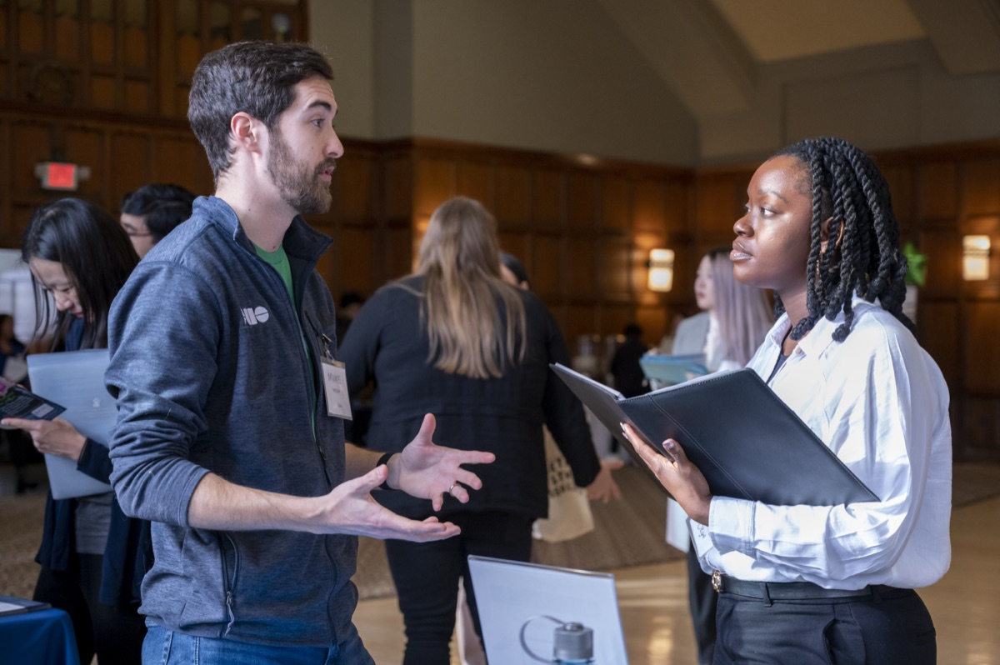

Reflecting on Your Experience
Close your project responsibly, evaluate your outcomes, and articulate your real-world experience for your future career.

Why Closing Well and Reflecting Matter
A project is not finished when you hand over the final deliverable. Closing the project well, reflecting on it, and describing it to others is what turns one project into lasting value for your partner and momentum for your career.
What a Responsible Handoff Includes
A responsible handoff means your partner is not left with tools or systems they cannot maintain. It usually includes:
- Documentation that explains what you built and how to use it
- Final files and materials in a format your partner can keep updating
- A closing conversation with your partner about what was delivered and what comes next
Why Reflection Matters
Structured reflection asks you to pause and consider: What did I learn about my technical skills, my teamwork style, and the ethical impact of my work? Without reflection, experience is just something that happened to you; with reflection, experience becomes expertise.
Turning messy project stories into clear resume bullets and portfolio case studies helps you show others what you learned.
Career Integration & Portfolios
Employers do not just hire technical skills. They hire people who can solve messy, real-world problems, collaborate in diverse teams, and deliver results under realistic constraints. This page helps you connect your academic work to your professional brand and tell the full story of your growth.
What You Will Do in This Phase
- Articulating Skills: Translate complex, real-world project work into compelling resume bullets and interview responses.
- Portfolio Integration: Document your process, artifacts, key decisions, and measurable outcomes.
- Maintaining Networks: Keep professional touchpoints open with mentors, community partners, and teammates.
Featured Resources and Handouts
- How to Include Project Experience on Student Resumes (Google Doc)
- Step-by-step guide to translating client/course projects into high-impact resume experience.
- How to Engage with UMSI on Social Media (Google Doc)
- Best practices for sharing project milestones, tagging partners, and showcasing work publicly on LinkedIn.
- Career Center Interviewing Resources (web page)
- Use the STAR method (Situation, Task, Action, Result) to prepare interview stories about teamwork, conflict, and technical problem-solving.
What Comes Next
Ready for another experience? Explore the featured programs on the home page, or sign up for the ELO newsletter to hear about new opportunities.
Questions? Email umsi.engagement@umich.edu.